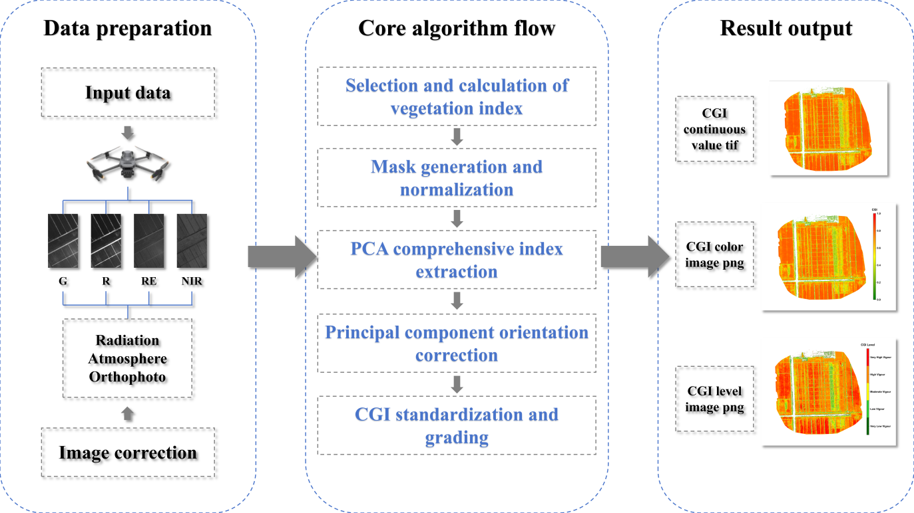
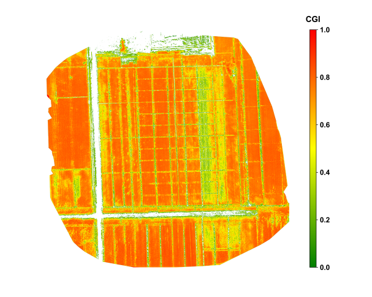
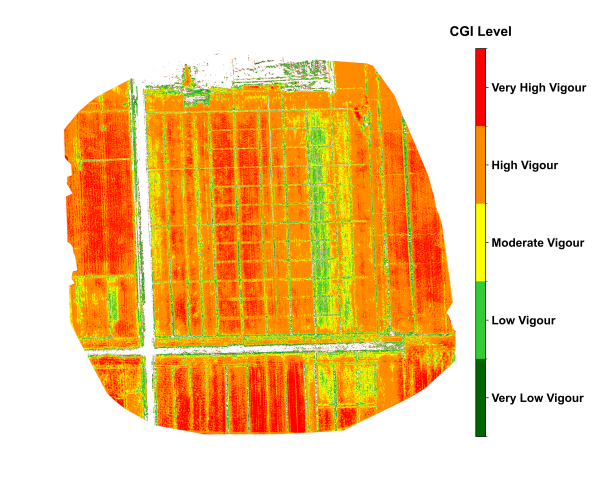
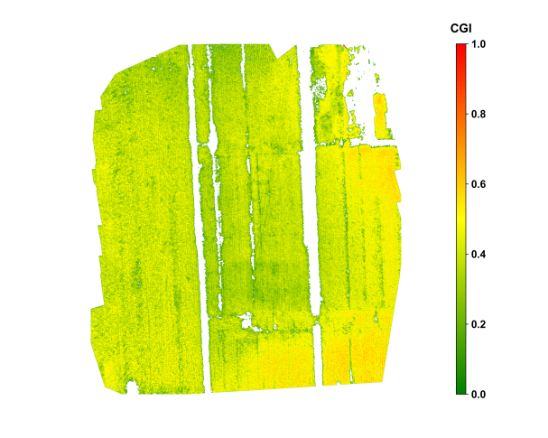
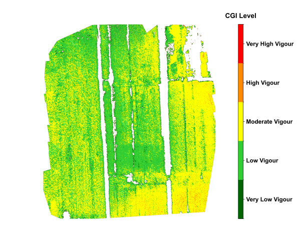
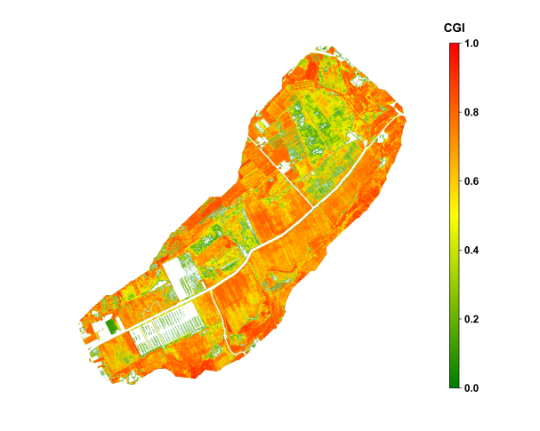
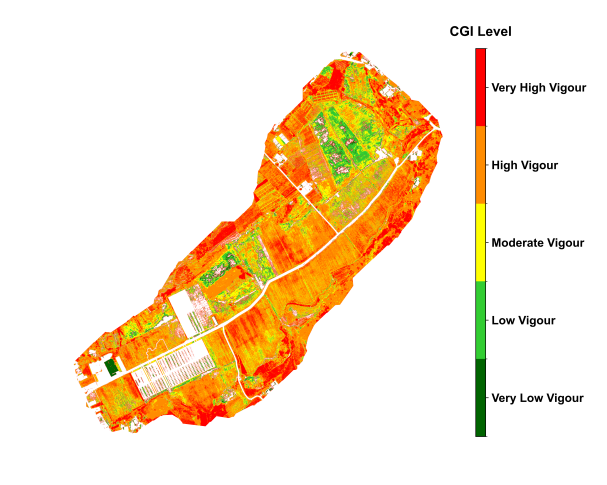

32 Automated Monitoring of Crop Growth Index using UAV
32.1 Introduction
Crop growth monitoring is a fundamental component of modern precision agriculture and plays a crucial role in ensuring food security and optimizing agricultural production. Unmanned aerial vehicle (UAV) imaging has become a key technology for efficient and non-destructive monitoring of crop growth [1]. This section introduces a method for automatically monitoring crop growth using UAV-based multispectral imagery, named Crop Growth Index (CGI). The CGI integrates multispectral vegetation indices through normalization and principal component analysis (PCA), enabling effective fusion of multi-band information to improve the accuracy and stability of growth monitoring [2]. The method emphasizes automated data processing and intuitive visual expression of results, supporting rapid generation of continuous CGI values and growth grade maps, which are valuable for field-level decision-making.
32.2 Experimental Area and Data
To evaluate the method’s applicability and robustness, three different crop types across various regions in China were selected for algorithm testing. These cases cover diverse growth stages of crops and offer broad representativeness. The details of each case are as follows:
Xinji City, Hebei Province, China — Winter wheat; data acquired on May 12, 2024, during the grain-filling stage. The area belongs to a warm temperate semi-humid climate with intensive farmland cultivation, suitable for wheat growth.
Xinxiang City, Henan Province, China — Maize; data acquired on August 25, 2024, during the grain-filling stage. The area is characterized by flat terrain, high agricultural mechanization and large-scale maize cultivation.
Shiping County, Yunnan Province, China — Tobacco crop; data acquired on July 25, 2024, during the vigorous growth stage. Located in a subtropical plateau monsoon climate zone, the area is known for high-quality tobacco and complex growing conditions.
All experimental data were acquired using a DJI Mavic 3 Multispectral UAV equipped with a four-band camera (Green, Red, Red Edge, Near Infrared) [3]. To ensure data quality, flights followed pre-planned routes at altitudes of 80–120 m, with both forward and side overlaps set to 75%–80%, guaranteeing complete field coverage and high-quality image mosaicking. Data collection was conducted under clear, cloudless with uniform illumination to minimize interference from shadows and clouds [4]. After each flight, raw images and POS data were immediately exported, and a metadata record sheet was established, including the acquisition date, crop type, growth stage, meteorological conditions, and flight parameters.
The raw images were processed using DJI Terra software, including radiometric correction (to ensure spectral consistency among images), atmospheric correction (to eliminate illumination and aerosol interference), and orthorectification (to ensure geometric accuracy). The outputs were four-band orthophotos (in GeoTIFF format) with a spatial resolution of approximately 5–10 cm. For subsequent automated processing, the band order was standardized as Green (G), Red (R), Red Edge (RE), Near Infrared (NIR), and all images were projected to the WGS84/UTM Zone coordinate system corresponding to the experimental region. All pre-processed images were stored in folders named “Region_Crop_Date,” ensuring traceability and batch management of data across different regions and time periods.
32.3 Methods
The CGI algorithm uses UAV multispectral imagery as input and enables quantitative monitoring of crop growth through a series of automated processing steps. The technical workflow includes: (1) selection and calculation of vegetation indices; (2) masks generation and indices normalization; (3) extraction of composite indicators based on principal component analysis (PCA); (4) adjustment of principal component directions to ensure positive correlation with growth status; (5) mapping of continuous CGI values to the 0–1 range and classification; and (6) output of standardized result products. The following sections elaborate these six steps in detail.
The input consists of multispectral orthophotos that have undergone radiometric, atmospheric, and geometric correction, supporting either four-band (G, R, RE, NIR) or five-band (B, G, R, RE, NIR) structures. The code first determines the number of bands and unpacks them according to the prescribed order. On a per-pixel basis, five vegetation indices are then calculated: Green Normalized Difference Vegetation Index (GNDVI), Leaf Chlorophyll Index (LCI), Normalized Difference Red Edge Index (NDRE), Normalized Difference Vegetation Index (NDVI), and Optimized Soil-Adjusted Vegetation Index (OSAVI).
These indices have been extensively validated in previous studies as being highly sensitive to critical physiological parameters such as chlorophyll content, photosynthetic capacity, and nitrogen status (Huete et al., 2002), making them effective indicators of crop growth and thus serving as the core inputs to CGI. To prevent division-by-zero errors, a small constant (ε = 1e − 10) is added to all denominators; for example, OSAVI is implemented as 1.16 × (NIR − R) / (NIR + R + 0.16 + ε).
Once calculated, the five indices are stacked into an array of shape (5, H, W) for subsequent masking and normalization. If index values fall outside the reasonable range (approximately −1 to 1), users should first verify whether the band order is consistent with the prescribed sequence, followed by checking the upstream correction procedures.
| Vegetation Index | Calculation Formula | Indicative Significance for Crop Growth |
|---|---|---|
| NDVI (Normalized Difference Vegetation Index) | (NIR − Red) / (NIR + Red) | Reflects chlorophyll content and vegetation vigor; higher values indicate healthier crops [5]. |
| GNDVI (Green NDVI) | (NIR − Green) / (NIR + Green) | More sensitive to chlorophyll concentration, useful for assessing nitrogen status [6]. |
| NDRE (Normalized Difference Red Edge) | (NIR − RedEdge) / (NIR + RedEdge) | Effective for monitoring canopy structure and stress, especially in mid-to-late growth stages [7]. |
| LCI (Leaf Chlorophyll Index) | (RedEdge − Red) / (RedEdge + Red) | Directly correlates with leaf chlorophyll levels, indicating photosynthetic activity [8]. |
| OSAVI (Optimized Soil-Adjusted Vegetation Index) | 1.16 × (NIR − Red) / (NIR + Red + 0.16) | Reduces soil background influence, suitable for sparse vegetation or early growth stages [9]. |
A binary mask (valid_mask) is generated using NDVI > 0.3 as the threshold to exclude non-vegetation areas such as bare soil, shadows, and water [10]. The threshold can be slightly adjusted depending on crop type and growth stage but must remain consistent within a single batch to ensure comparability. The five vegetation indices are then reshaped into a two-dimensional matrix of size (N pixels, 5 indices). Normalization is applied only to pixels within the mask: each column (i.e., each index) is scaled to a 0–1 range using MinMaxScaler, based on the minimum and maximum values of valid pixels. This “mask first, normalize later” order is consistent with the code logic and prevents non-vegetation pixels from skewing the scale. The normalized results are not written to disk but passed directly to the PCA step.
The normalized matrix (N × 5) is input into PCA with n_components = 1 to extract the first principal component (PC1). The code applies PCA directly to the valid-pixel matrix and produces a single column cgi_valid (length N). At the same time, the explained variance ratio of PC1 is recorded to quantify its contribution to the overall variation, with the terminal printing “Explained variance of PC1” as a quality control check. Since all indices have been standardized (0–1) prior to PCA, PC1 captures the integrated pattern of relative variation among indices, reducing the risk of bias from any single index. At this stage, outputs remain in memory.
Because PCA component signs are not fixed, alignment with biological meaning is required. The code uses the normalized NDVI values as reference and calculates the Pearson correlation coefficient (PCC). If PCC < 0, the sign of cgi_valid is reversed to ensure that CGI is positively correlated with NDVI (and thus crop vigor). After direction correction, the one-dimensional array is mapped back into the full two-dimensional grid, with invalid pixels filled as NoData = −9999 and valid pixels retaining cgi_valid values. For visualization, cgi_valid is further normalized to [0,1] based on valid pixels, generating cgi_valid_norm, which is written back into the CGI raster for display.
32.4 Results
Figure 32.2 shows the results for wheat in Xinji, Hebei, during the grain-filling stage in early May. The four-band imagery acquired by the DJI Mavic 3 Multispectral UAV was processed and used for vegetation index computation. The resulting CGI effectively identified high-growth areas within the wheat canopy. Regions with better crop performance were mainly located in the central, western, and southern parts of the fields, where CGI values approached 0.8, indicating vigorous plant growth with high chlorophyll content and adequate nitrogen supply. In contrast, relatively low CGI values appeared in the eastern-central part of the field under low water and nitrogen treatments, reflecting localized growth limitations. The spatial distribution of CGI closely matched field-sampled data on chlorophyll content and leaf area index, confirming the reliability of the proposed method.


Figure 32.3 shows the spatial distribution of maize in Xinxiang, Henan, during the grain-filling stage in late August. During the critical grain-filling and maturation stage of the maize crop, the CGI imagery revealed notable intra-field variability in growth conditions. High CGI values, approaching 0.6, were concentrated in the southeastern portion of the field, indicating well-developed plants with strong photosynthetic activity. In contrast, the south-central area exhibited lower CGI values around 0.3, which is attributed to soil compaction and localized water stress. The CGI imagery was further divided the growth status into five levels, visually illustrating the spatial distribution of growth conditions and providing a practical reference for implementing differentiated fertilization and irrigation strategies.


Figure 32.4 shows the spatial distribution of tobacco in Shiping, Yunnan, during vigorous growth stage, in late July. During the vigorous growth stage of the tobacco crop, the CGI imagery displayed relatively uniform growth across the field, with most areas classified as having relatively good growth, indicating overall crop health. Localized zones with lower CGI values were mainly observed near certain drainage channels, likely influenced by uneven soil moisture and potential pest or disease stress. The classified CGI map distinctly delineated five levels of crop growth, enabling rapid identification of potential risk areas. When combined with historical weather data and field management records, the CGI monitoring results provided a basis for field management and yield forecasting of tobacco.


The above results demonstrate that the CGI algorithm, based on the fusion of multispectral vegetation indices, effectively captures spatial variability of crop growth across different crop types and growth stages. The outcomes show strong agreement with field observations, indicating high applicability and potential for broader adoption.
32.5 Discussion
The CGI algorithm proposed in this study uses UAV multispectral imagery as its data source and employs an automated workflow of “multi-index calculation → threshold masking → normalization → PCA integration → direction correction → standardized output.” This framework effectively addresses the limitations of traditional growth monitoring methods that rely on a single index and are vulnerable to noise interference. Compared with NDVI alone, CGI integrates information from multiple sensitive indices, including GNDVI, LCI, NDRE, NDVI, and OSAVI, thereby mitigating the effects of soil background variability, changes in light conditions, and saturation of single bands. After PCA integration, the continuous CGI values show strong consistency with field-measured parameters such as chlorophyll content and leaf area index, and reliably capture growth differences across crops and growth stages (Breunig et al., 2020).
From an application perspective, the automated implementation of CGI offers two key advantages. First, the entire workflow is built upon open-source tools (e.g., NumPy, Rasterio, scikit-learn) and can be efficiently executed on standard research workstations without expensive hardware. Second, the outputs include three types of products, continuous-value GeoTIFFs, color-rendered maps, and classified maps, that can be directly integrated into GIS systems alongside other agricultural factors (e.g., fertilization zones, soil properties, meteorological data) for visualization and field decision-making.
It should be noted, however, that the accuracy of CGI remains influenced by illumination conditions, canopy structure, and soil heterogeneity. In fields with shadows, sloped terrain, or high bare-soil ratios, supplementary data such as time-series imagery or multi-source observations (e.g., SAR, thermal infrared) are recommended to enhance robustness and transferability (Berger et al., 2022). Furthermore, classification standards vary across crops and regions; thus, for cross-field or cross-year comparisons, it is essential to adopt consistent thresholds and protocols within a unified batch-processing framework to avoid classification drift.
32.6 Conclusions
In summary, the CGI algorithm achieves automated, standardized, and visualized monitoring of crop growth from UAV multispectral imagery through the integration of multiple vegetation indices and PCA extraction. Case studies demonstrate that this method consistently captures growth differences across wheat, maize, and tobacco, at different growth stages and under diverse climatic conditions, while showing strong agreement with field measurements. The continuous CGI products provide a quantitative basis for researchers, whereas the classified CGI maps allow farmers to quickly identify areas of weak or vigorous growth, thereby supporting precision fertilization, differentiated irrigation, and pest and disease management.
Built upon the Python open-source system, this method supports batch and pipeline processing, enabling rapid large-scale farmland monitoring on standard research workstations. This significantly enhances the efficiency of smart agriculture monitoring and the scientific basis of decision-making. Future work can further integrate time-series UAV imagery with multi-source satellite data and explore spatiotemporal modeling approaches based on deep learning, aiming to achieve higher-frequency and larger-scale dynamic monitoring of crop growth. Such advancements would provide more timely and broadly applicable technical support for regional food security evaluation and agricultural management.
Code and data availability
The code for this work is available in Github
References
[1]
I. Colomina and P. Molina, “Unmanned aerial systems for photogrammetry and remote sensing: A review,” ISPRS Journal of Photogrammetry and Remote Sensing, vol. 92, pp. 79–97, 2014, doi: 10.1016/j.isprsjprs.2014.02.013.
[2]
Y. Hirosawa, S. E. Marsh, and D. H. Kliman, “Application of standardized principal component analysis to land-cover characterization using multitemporal AVHRR data,” Remote Sensing of Environment, vol. 58, no. 3, pp. 267–281, 1996, doi: 10.1016/S0034-4257(96)00068-5.
[3]
L. Deng, Z. Mao, X. Li, Z. Hu, F. Duan, and Y. Yan, “UAV-based multispectral remote sensing for precision agriculture: A comparison between different cameras,” ISPRS Journal of Photogrammetry and Remote Sensing, vol. 146, pp. 124–136, 2018, doi: 10.1016/j.isprsjprs.2018.09.008.
[4]
C. Cao, S. Dragićević, and S. Li, “Land-Use Change Detection with Convolutional Neural Network Methods,” Environments, vol. 6, no. 2, p. 25, 2019, doi: 10.3390/environments6020025.
[5]
C. J. Tucker, “Red and photographic infrared linear combinations for monitoring vegetation,” Remote Sensing of Environment, vol. 8, no. 2, pp. 127–150, 1979, doi: 10.1016/0034-4257(79)90013-0.
[6]
A. A. Gitelson, Y. J. Kaufman, and M. N. Merzlyak, “Use of a green channel in remote sensing of global vegetation from EOS-MODIS,” Remote Sensing of Environment, vol. 58, no. 3, pp. 289–298, 1996, doi: 10.1016/S0034-4257(96)00072-7.
[7]
J. U. H. Eitel et al., “Broadband, red-edge information from satellites improves early stress detection in a New Mexico conifer woodland,” Remote Sensing of Environment, vol. 115, no. 12, pp. 3640–3646, 2011, doi: 10.1016/j.rse.2011.09.002.
[8]
J. G. P. W. Clevers and A. A. Gitelson, “Remote estimation of crop and grass chlorophyll and nitrogen content using red-edge bands on Sentinel-2 and -3,” International Journal of Applied Earth Observation and Geoinformation, vol. 23, pp. 344–351, 2013, doi: 10.1016/j.jag.2012.10.008.
[9]
G. Rondeaux, M. Steven, and F. Baret, “Optimization of soil-adjusted vegetation indices,” Remote Sensing of Environment, vol. 55, no. 2, pp. 95–107, 1996, doi: 10.1016/0034-4257(95)00186-7.
[10]
Z. Ahmed et al., “Winter-time cover crop identification: A remote sensing-based methodological framework for new and rapid data generation,” International Journal of Applied Earth Observation and Geoinformation, vol. 125, p. 103564, 2023, doi: 10.1016/j.jag.2023.103564.